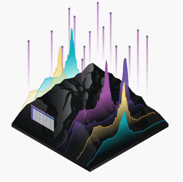

Teknologi Informasi Geografi
Website terkait perkembangan Teknologi dan Sistem Informasi Geografi
Tema
Sistem Informasi Geografi
Kartografi

Penginderaan Jauh
Sistem Informasi Geografi
Kartografi
Penginderaan Jauh
SIG adalah sistem informasi yang didasarkan pada kerja komputer yang memasukkan, mengelola, memanipulasi dan menganalisis data serta memberi uraian (Aronaff, 1989).